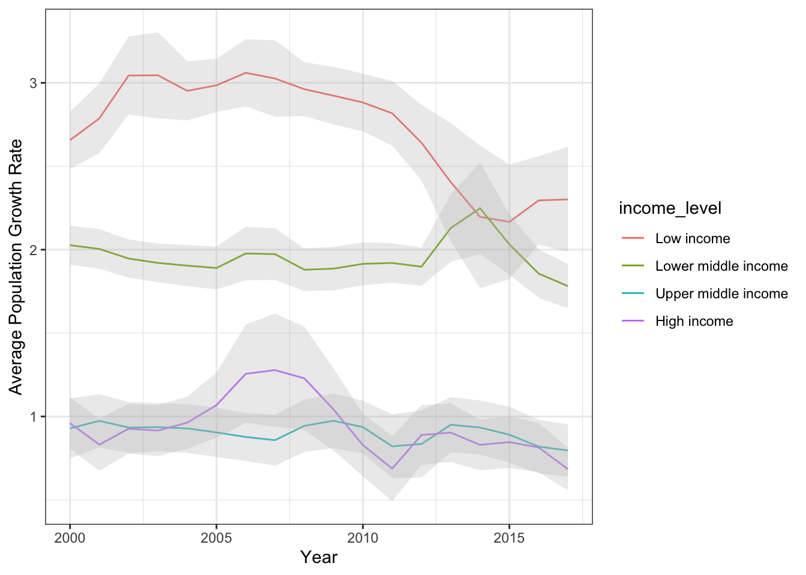

Worked Example: Wrangling World Bank Population Data
Dai Shizuka
updated 08/24/25
Things you will learn in this Worked Example
- Practice wrangling data with dplyr and tidyr
- Learn tricks to download data from public data repositories like the World Bank
- More practice with ggplot
- A little bit of stats
We will accomplish these while exploring the (admittedly superficial) patterns in population growth rates across countries.
By the end, you’ll be able to produce graphs like this:

Set up: load packages
library(wbstats)
library(tidyverse)1. The Data: Population growth trends across the world
The World Bank actually makes it very easy to download a huge amount
of data very easily. You could just go to the World Bankd Open Data site and
search for data and download them in a few clicks. There are even
packages such as WDI and wbstats that allow
you to query and pull data from this site from within R.
However, for the purposes of this exercise, we will deal with several datasets that are included in the packages we have loaded above.
world_bank_pop: Population data from World Bank
(2000-2017)
First is the world_bank_pop dataset that is included in
the tidyr package (which is part of the the tidyverse
suite). Start by pulling up the help file for the dataset
?world_bank_popLet’s take a peak at the data, which is in “tibble” format:
world_bank_pop## # A tibble: 1,064 × 20
## country indicator `2000` `2001` `2002` `2003` `2004` `2005` `2006`
## <chr> <chr> <dbl> <dbl> <dbl> <dbl> <dbl> <dbl> <dbl>
## 1 ABW SP.URB.TOTL 4.16e4 4.20e+4 4.22e+4 4.23e+4 4.23e+4 4.24e+4 4.26e+4
## 2 ABW SP.URB.GROW 1.66e0 9.56e-1 4.01e-1 1.97e-1 9.46e-2 1.94e-1 3.67e-1
## 3 ABW SP.POP.TOTL 8.91e4 9.07e+4 9.18e+4 9.27e+4 9.35e+4 9.45e+4 9.56e+4
## 4 ABW SP.POP.GROW 2.54e0 1.77e+0 1.19e+0 9.97e-1 9.01e-1 1.00e+0 1.18e+0
## 5 AFE SP.URB.TOTL 1.16e8 1.20e+8 1.24e+8 1.29e+8 1.34e+8 1.39e+8 1.44e+8
## 6 AFE SP.URB.GROW 3.60e0 3.66e+0 3.72e+0 3.71e+0 3.74e+0 3.81e+0 3.81e+0
## 7 AFE SP.POP.TOTL 4.02e8 4.12e+8 4.23e+8 4.34e+8 4.45e+8 4.57e+8 4.70e+8
## 8 AFE SP.POP.GROW 2.58e0 2.59e+0 2.61e+0 2.62e+0 2.64e+0 2.67e+0 2.70e+0
## 9 AFG SP.URB.TOTL 4.31e6 4.36e+6 4.67e+6 5.06e+6 5.30e+6 5.54e+6 5.83e+6
## 10 AFG SP.URB.GROW 1.86e0 1.15e+0 6.86e+0 7.95e+0 4.59e+0 4.47e+0 5.03e+0
## # ℹ 1,054 more rows
## # ℹ 11 more variables: `2007` <dbl>, `2008` <dbl>, `2009` <dbl>, `2010` <dbl>,
## # `2011` <dbl>, `2012` <dbl>, `2013` <dbl>, `2014` <dbl>, `2015` <dbl>,
## # `2016` <dbl>, `2017` <dbl>Notice that each country is repeated across 4 rows. This is because there are actually 4 different “indicators” for each country, and so each country x indicator combination takes up a row. The rest of the columns are years, from 2000 to 2017.
Also notice that the numbers in the column names have a backquote, or “`” around them. In R, this allows numbers to be interpreted as text (and column names have to be text).
So, if you wanted to pull up the “2001” column, this will NOT work…
world_bank_pop$2001…but this will work
world_bank_pop$`2001`2. Exclude aggregate data to get data for countries only
We are going to start by diving into the world_bank_pop
dataset.
Let’s take a peek at the dataset again and see what we have…
world_bank_pop## # A tibble: 1,064 × 20
## country indicator `2000` `2001` `2002` `2003` `2004` `2005` `2006`
## <chr> <chr> <dbl> <dbl> <dbl> <dbl> <dbl> <dbl> <dbl>
## 1 ABW SP.URB.TOTL 4.16e4 4.20e+4 4.22e+4 4.23e+4 4.23e+4 4.24e+4 4.26e+4
## 2 ABW SP.URB.GROW 1.66e0 9.56e-1 4.01e-1 1.97e-1 9.46e-2 1.94e-1 3.67e-1
## 3 ABW SP.POP.TOTL 8.91e4 9.07e+4 9.18e+4 9.27e+4 9.35e+4 9.45e+4 9.56e+4
## 4 ABW SP.POP.GROW 2.54e0 1.77e+0 1.19e+0 9.97e-1 9.01e-1 1.00e+0 1.18e+0
## 5 AFE SP.URB.TOTL 1.16e8 1.20e+8 1.24e+8 1.29e+8 1.34e+8 1.39e+8 1.44e+8
## 6 AFE SP.URB.GROW 3.60e0 3.66e+0 3.72e+0 3.71e+0 3.74e+0 3.81e+0 3.81e+0
## 7 AFE SP.POP.TOTL 4.02e8 4.12e+8 4.23e+8 4.34e+8 4.45e+8 4.57e+8 4.70e+8
## 8 AFE SP.POP.GROW 2.58e0 2.59e+0 2.61e+0 2.62e+0 2.64e+0 2.67e+0 2.70e+0
## 9 AFG SP.URB.TOTL 4.31e6 4.36e+6 4.67e+6 5.06e+6 5.30e+6 5.54e+6 5.83e+6
## 10 AFG SP.URB.GROW 1.86e0 1.15e+0 6.86e+0 7.95e+0 4.59e+0 4.47e+0 5.03e+0
## # ℹ 1,054 more rows
## # ℹ 11 more variables: `2007` <dbl>, `2008` <dbl>, `2009` <dbl>, `2010` <dbl>,
## # `2011` <dbl>, `2012` <dbl>, `2013` <dbl>, `2014` <dbl>, `2015` <dbl>,
## # `2016` <dbl>, `2017` <dbl>I want to start by looking at how many unique countries we actually have here.
length(unique(world_bank_pop$country)) #this gives us the number of unique values in the "country" column## [1] 266You can see that there are way more “countries” here than there are in the world. As of 2022, there are 193 countries in the United Nations, though if we add soverign states that are not recognized by UN (e.g., Taiwan, Kosovo, etc.), the list is about 206… and there are more if we include disputed territories.
The reason the World Bank data has even more than that is because some of the “countries” include “aggregates” like “Arab World” or “High-income Countries”.
Unfortunately, the world_bank_pop dataset does not
include any variables that allow us to differentiate the countries from
the aggregates! However, we can solve this problem by
pulling the metadata for countries from the World Bank. We can do this
by using the wb_countries() function from the
wbstats package.
Let’s pull the country metadata and save it as an object called “metadata”:
metadata=wb_countries()metadata## # A tibble: 296 × 18
## iso3c iso2c country capital_city longitude latitude region_iso3c region_iso2c
## <chr> <chr> <chr> <chr> <dbl> <dbl> <chr> <chr>
## 1 ABW AW Aruba Oranjestad -70.0 12.5 LCN ZJ
## 2 AFE ZH Africa… <NA> NA NA <NA> <NA>
## 3 AFG AF Afghan… Kabul 69.2 34.5 MEA ZQ
## 4 AFR A9 Africa <NA> NA NA <NA> <NA>
## 5 AFW ZI Africa… <NA> NA NA <NA> <NA>
## 6 AGO AO Angola Luanda 13.2 -8.81 SSF ZG
## 7 ALB AL Albania Tirane 19.8 41.3 ECS Z7
## 8 AND AD Andorra Andorra la … 1.52 42.5 ECS Z7
## 9 ARB 1A Arab W… <NA> NA NA <NA> <NA>
## 10 ARE AE United… Abu Dhabi 54.4 24.5 MEA ZQ
## # ℹ 286 more rows
## # ℹ 10 more variables: region <chr>, admin_region_iso3c <chr>,
## # admin_region_iso2c <chr>, admin_region <chr>, income_level_iso3c <chr>,
## # income_level_iso2c <chr>, income_level <chr>, lending_type_iso3c <chr>,
## # lending_type_iso2c <chr>, lending_type <chr>head(metadata$region)## [1] "Latin America & Caribbean"
## [2] "Aggregates"
## [3] "Middle East, North Africa, Afghanistan & Pakistan"
## [4] "Aggregates"
## [5] "Aggregates"
## [6] "Sub-Saharan Africa"So this column shows us the “Aggregates”.
So, we can use this to filter the metadata to exclude the Aggregate codes.
metadata %>% dplyr::filter(region != "Aggregates")## # A tibble: 217 × 18
## iso3c iso2c country capital_city longitude latitude region_iso3c region_iso2c
## <chr> <chr> <chr> <chr> <dbl> <dbl> <chr> <chr>
## 1 ABW AW Aruba Oranjestad -70.0 12.5 LCN ZJ
## 2 AFG AF Afghan… Kabul 69.2 34.5 MEA ZQ
## 3 AGO AO Angola Luanda 13.2 -8.81 SSF ZG
## 4 ALB AL Albania Tirane 19.8 41.3 ECS Z7
## 5 AND AD Andorra Andorra la … 1.52 42.5 ECS Z7
## 6 ARE AE United… Abu Dhabi 54.4 24.5 MEA ZQ
## 7 ARG AR Argent… Buenos Aires -58.4 -34.6 LCN ZJ
## 8 ARM AM Armenia Yerevan 44.5 40.2 ECS Z7
## 9 ASM AS Americ… Pago Pago -171. -14.3 EAS Z4
## 10 ATG AG Antigu… Saint John's -61.8 17.1 LCN ZJ
## # ℹ 207 more rows
## # ℹ 10 more variables: region <chr>, admin_region_iso3c <chr>,
## # admin_region_iso2c <chr>, admin_region <chr>, income_level_iso3c <chr>,
## # income_level_iso2c <chr>, income_level <chr>, lending_type_iso3c <chr>,
## # lending_type_iso2c <chr>, lending_type <chr>Let’s also pare down the data to a few variables we might be interested in, including region and income level:
metadata %>%
dplyr::filter(region != "Aggregates") %>%
select(iso3c, iso2c, country, region, income_level)## # A tibble: 217 × 5
## iso3c iso2c country region income_level
## <chr> <chr> <chr> <chr> <chr>
## 1 ABW AW Aruba Latin America & Caribbean High income
## 2 AFG AF Afghanistan Middle East, North Africa, Afg… Low income
## 3 AGO AO Angola Sub-Saharan Africa Lower middl…
## 4 ALB AL Albania Europe & Central Asia Upper middl…
## 5 AND AD Andorra Europe & Central Asia High income
## 6 ARE AE United Arab Emirates Middle East, North Africa, Afg… High income
## 7 ARG AR Argentina Latin America & Caribbean Upper middl…
## 8 ARM AM Armenia Europe & Central Asia Upper middl…
## 9 ASM AS American Samoa East Asia & Pacific High income
## 10 ATG AG Antigua and Barbuda Latin America & Caribbean High income
## # ℹ 207 more rowsOk, this looks useful. Let’s save it as a data table called
countries
countries=metadata %>%
dplyr::filter(region != "Aggregates") %>%
select(iso3c, iso2c, country.name=country, region, income_level) %>%
mutate(income_level=factor(income_level, levels=c("Low income", "Lower middle income", "Upper middle income", "High income")))Now, we are going to use the inner_join() function to
make a version of the world bank population data that is only for actual
countries (not aggregates):
inner_join(world_bank_pop, countries, by=c("country" = "iso3c"))## # A tibble: 868 × 24
## country indicator `2000` `2001` `2002` `2003` `2004` `2005` `2006`
## <chr> <chr> <dbl> <dbl> <dbl> <dbl> <dbl> <dbl> <dbl>
## 1 ABW SP.URB.TOTL 4.16e4 4.20e+4 4.22e+4 4.23e+4 4.23e+4 4.24e+4 4.26e+4
## 2 ABW SP.URB.GROW 1.66e0 9.56e-1 4.01e-1 1.97e-1 9.46e-2 1.94e-1 3.67e-1
## 3 ABW SP.POP.TOTL 8.91e4 9.07e+4 9.18e+4 9.27e+4 9.35e+4 9.45e+4 9.56e+4
## 4 ABW SP.POP.GROW 2.54e0 1.77e+0 1.19e+0 9.97e-1 9.01e-1 1.00e+0 1.18e+0
## 5 AFG SP.URB.TOTL 4.31e6 4.36e+6 4.67e+6 5.06e+6 5.30e+6 5.54e+6 5.83e+6
## 6 AFG SP.URB.GROW 1.86e0 1.15e+0 6.86e+0 7.95e+0 4.59e+0 4.47e+0 5.03e+0
## 7 AFG SP.POP.TOTL 1.95e7 1.97e+7 2.10e+7 2.26e+7 2.36e+7 2.44e+7 2.54e+7
## 8 AFG SP.POP.GROW 1.44e0 7.43e-1 6.45e+0 7.54e+0 3.93e+0 3.58e+0 4.14e+0
## 9 AGO SP.URB.TOTL 8.21e6 8.69e+6 9.19e+6 9.72e+6 1.03e+7 1.09e+7 1.14e+7
## 10 AGO SP.URB.GROW 5.65e0 5.63e+0 5.62e+0 5.65e+0 5.69e+0 5.67e+0 4.95e+0
## # ℹ 858 more rows
## # ℹ 15 more variables: `2007` <dbl>, `2008` <dbl>, `2009` <dbl>, `2010` <dbl>,
## # `2011` <dbl>, `2012` <dbl>, `2013` <dbl>, `2014` <dbl>, `2015` <dbl>,
## # `2016` <dbl>, `2017` <dbl>, iso2c <chr>, country.name <chr>, region <chr>,
## # income_level <fct>You can see that the inner_join() function worked if you
scroll all the way to the right of the output table.
Let’s rearrange the order of the columns using
relocate() so that we can have all the useful metadata
appear first (left-most):
inner_join(world_bank_pop, countries, by=c("country" = "iso3c")) %>%
relocate(country, iso2c, country.name, region, income_level)## # A tibble: 868 × 24
## country iso2c country.name region income_level indicator `2000` `2001`
## <chr> <chr> <chr> <chr> <fct> <chr> <dbl> <dbl>
## 1 ABW AW Aruba Latin Ameri… High income SP.URB.T… 4.16e4 4.20e+4
## 2 ABW AW Aruba Latin Ameri… High income SP.URB.G… 1.66e0 9.56e-1
## 3 ABW AW Aruba Latin Ameri… High income SP.POP.T… 8.91e4 9.07e+4
## 4 ABW AW Aruba Latin Ameri… High income SP.POP.G… 2.54e0 1.77e+0
## 5 AFG AF Afghanistan Middle East… Low income SP.URB.T… 4.31e6 4.36e+6
## 6 AFG AF Afghanistan Middle East… Low income SP.URB.G… 1.86e0 1.15e+0
## 7 AFG AF Afghanistan Middle East… Low income SP.POP.T… 1.95e7 1.97e+7
## 8 AFG AF Afghanistan Middle East… Low income SP.POP.G… 1.44e0 7.43e-1
## 9 AGO AO Angola Sub-Saharan… Lower middl… SP.URB.T… 8.21e6 8.69e+6
## 10 AGO AO Angola Sub-Saharan… Lower middl… SP.URB.G… 5.65e0 5.63e+0
## # ℹ 858 more rows
## # ℹ 16 more variables: `2002` <dbl>, `2003` <dbl>, `2004` <dbl>, `2005` <dbl>,
## # `2006` <dbl>, `2007` <dbl>, `2008` <dbl>, `2009` <dbl>, `2010` <dbl>,
## # `2011` <dbl>, `2012` <dbl>, `2013` <dbl>, `2014` <dbl>, `2015` <dbl>,
## # `2016` <dbl>, `2017` <dbl>This looks good. Let’s save it as an object we’ll call
popdat_countries
popdat_countries=inner_join(world_bank_pop, countries, by=c("country" = "iso3c")) %>%
relocate(country, iso2c, country.name, region, income_level)
popdat_countries## # A tibble: 868 × 24
## country iso2c country.name region income_level indicator `2000` `2001`
## <chr> <chr> <chr> <chr> <fct> <chr> <dbl> <dbl>
## 1 ABW AW Aruba Latin Ameri… High income SP.URB.T… 4.16e4 4.20e+4
## 2 ABW AW Aruba Latin Ameri… High income SP.URB.G… 1.66e0 9.56e-1
## 3 ABW AW Aruba Latin Ameri… High income SP.POP.T… 8.91e4 9.07e+4
## 4 ABW AW Aruba Latin Ameri… High income SP.POP.G… 2.54e0 1.77e+0
## 5 AFG AF Afghanistan Middle East… Low income SP.URB.T… 4.31e6 4.36e+6
## 6 AFG AF Afghanistan Middle East… Low income SP.URB.G… 1.86e0 1.15e+0
## 7 AFG AF Afghanistan Middle East… Low income SP.POP.T… 1.95e7 1.97e+7
## 8 AFG AF Afghanistan Middle East… Low income SP.POP.G… 1.44e0 7.43e-1
## 9 AGO AO Angola Sub-Saharan… Lower middl… SP.URB.T… 8.21e6 8.69e+6
## 10 AGO AO Angola Sub-Saharan… Lower middl… SP.URB.G… 5.65e0 5.63e+0
## # ℹ 858 more rows
## # ℹ 16 more variables: `2002` <dbl>, `2003` <dbl>, `2004` <dbl>, `2005` <dbl>,
## # `2006` <dbl>, `2007` <dbl>, `2008` <dbl>, `2009` <dbl>, `2010` <dbl>,
## # `2011` <dbl>, `2012` <dbl>, `2013` <dbl>, `2014` <dbl>, `2015` <dbl>,
## # `2016` <dbl>, `2017` <dbl>3. Which are the world’s largest countries (in 2017)?
As mentioned at the beginning, each row of data here is a country x indicator combination, with 4 different indicators. The indicators are:
SP.POP.GROW = population growth
SP.POP.TOTL = total population
SP.URB.GROW = urban population growth
SP.URB.TOTL = total urban population
So, we will create a data table called pop_totals that
is just the “total population” data.
pop_totals=popdat_countries %>%
dplyr::filter(indicator=="SP.POP.TOTL")
pop_totals## # A tibble: 217 × 24
## country iso2c country.name region income_level indicator `2000` `2001` `2002`
## <chr> <chr> <chr> <chr> <fct> <chr> <dbl> <dbl> <dbl>
## 1 ABW AW Aruba Latin… High income SP.POP.T… 8.91e4 9.07e4 9.18e4
## 2 AFG AF Afghanistan Middl… Low income SP.POP.T… 1.95e7 1.97e7 2.10e7
## 3 AGO AO Angola Sub-S… Lower middl… SP.POP.T… 1.64e7 1.69e7 1.75e7
## 4 ALB AL Albania Europ… Upper middl… SP.POP.T… 3.09e6 3.06e6 3.05e6
## 5 AND AD Andorra Europ… High income SP.POP.T… 6.61e4 6.78e4 7.08e4
## 6 ARE AE United Arab… Middl… High income SP.POP.T… 3.28e6 3.45e6 3.63e6
## 7 ARG AR Argentina Latin… Upper middl… SP.POP.T… 3.71e7 3.75e7 3.79e7
## 8 ARM AM Armenia Europ… Upper middl… SP.POP.T… 3.17e6 3.13e6 3.11e6
## 9 ASM AS American Sa… East … High income SP.POP.T… 5.82e4 5.83e4 5.82e4
## 10 ATG AG Antigua and… Latin… High income SP.POP.T… 7.51e4 7.62e4 7.72e4
## # ℹ 207 more rows
## # ℹ 15 more variables: `2003` <dbl>, `2004` <dbl>, `2005` <dbl>, `2006` <dbl>,
## # `2007` <dbl>, `2008` <dbl>, `2009` <dbl>, `2010` <dbl>, `2011` <dbl>,
## # `2012` <dbl>, `2013` <dbl>, `2014` <dbl>, `2015` <dbl>, `2016` <dbl>,
## # `2017` <dbl>From this population size data, let’s figure out what is the 90th
percentile in population size in 2017. We are going to get this number
by doing pull() to get the 2017 population sizes as a
vector, and use quantile() to get the 90th percentile. Save
that value as upper_pop.
upper_pop=pop_totals %>%
pull(`2017`) %>%
quantile(., probs=0.90, na.rm=T) # this allows us to find the value at Nth percentile
upper_pop## 90%
## 62745569So, the 90th percentile of population sizes in 2017 is 63,286,844
Now, we can use this 90th percentile value to filter the population
size data to just the largest (>= 90th percentile) countries. We will
create a one-column tibble called large_countries() to save
this list of country codes.
pop_totals %>%
dplyr::filter(`2017` > upper_pop) ## # A tibble: 22 × 24
## country iso2c country.name region income_level indicator `2000` `2001` `2002`
## <chr> <chr> <chr> <chr> <fct> <chr> <dbl> <dbl> <dbl>
## 1 BGD BD Bangladesh South… Lower middl… SP.POP.T… 1.29e8 1.32e8 1.34e8
## 2 BRA BR Brazil Latin… Upper middl… SP.POP.T… 1.76e8 1.78e8 1.80e8
## 3 CHN CN China East … Upper middl… SP.POP.T… 1.26e9 1.27e9 1.28e9
## 4 COD CD Congo, Dem.… Sub-S… Low income SP.POP.T… 4.86e7 5.01e7 5.17e7
## 5 DEU DE Germany Europ… High income SP.POP.T… 8.22e7 8.23e7 8.25e7
## 6 EGY EG Egypt, Arab… Middl… Lower middl… SP.POP.T… 7.14e7 7.29e7 7.44e7
## 7 ETH ET Ethiopia Sub-S… <NA> SP.POP.T… 6.70e7 6.90e7 7.11e7
## 8 FRA FR France Europ… High income SP.POP.T… 6.09e7 6.14e7 6.18e7
## 9 GBR GB United King… Europ… High income SP.POP.T… 5.89e7 5.91e7 5.94e7
## 10 IDN ID Indonesia East … Upper middl… SP.POP.T… 2.14e8 2.17e8 2.20e8
## # ℹ 12 more rows
## # ℹ 15 more variables: `2003` <dbl>, `2004` <dbl>, `2005` <dbl>, `2006` <dbl>,
## # `2007` <dbl>, `2008` <dbl>, `2009` <dbl>, `2010` <dbl>, `2011` <dbl>,
## # `2012` <dbl>, `2013` <dbl>, `2014` <dbl>, `2015` <dbl>, `2016` <dbl>,
## # `2017` <dbl>Ok, now let’s select just the country code, country name and
population size of the world’s largest countries (90th percentile) and
arrange it in descending order using arrange()
largest_countries=pop_totals %>%
dplyr::filter(`2017` > upper_pop) %>%
select(country, country.name, `2017`) %>%
arrange(desc(`2017`))
print(largest_countries, n=22)## # A tibble: 22 × 3
## country country.name `2017`
## <chr> <chr> <dbl>
## 1 CHN China 1396215000
## 2 IND India 1354195680
## 3 USA United States 325122128
## 4 IDN Indonesia 264498852
## 5 PAK Pakistan 216379655
## 6 BRA Brazil 208504960
## 7 NGA Nigeria 193495907
## 8 BGD Bangladesh 161793964
## 9 RUS Russian Federation 144496739
## 10 JPN Japan 126972000
## 11 MEX Mexico 122839258
## 12 ETH Ethiopia 108197950
## 13 PHL Philippines 106738501
## 14 EGY Egypt, Arab Rep. 101789386
## 15 VNM Viet Nam 94033048
## 16 IRN Iran, Islamic Rep. 84505076
## 17 COD Congo, Dem. Rep. 84283273
## 18 DEU Germany 82657002
## 19 TUR Turkiye 82089826
## 20 THA Thailand 70898202
## 21 FRA France 66918020
## 22 GBR United Kingdom 660588594. How population growth rates have changed across years, by income level of countries
Now, let’s create a tibble that contains the population growth data as well as the income level designation for each country.
I’m also going to remove countries for which we are missing data
using drop_na().
popdat_countries %>%
dplyr::filter(indicator=="SP.POP.GROW") %>%
drop_na()## # A tibble: 215 × 24
## country iso2c country.name region income_level indicator `2000` `2001` `2002`
## <chr> <chr> <chr> <chr> <fct> <chr> <dbl> <dbl> <dbl>
## 1 ABW AW Aruba Latin… High income SP.POP.G… 2.54 1.77 1.19
## 2 AFG AF Afghanistan Middl… Low income SP.POP.G… 1.44 0.743 6.45
## 3 AGO AO Angola Sub-S… Lower middl… SP.POP.G… 3.24 3.29 3.34
## 4 ALB AL Albania Europ… Upper middl… SP.POP.G… -0.637 -0.938 -0.300
## 5 AND AD Andorra Europ… High income SP.POP.G… 0.671 2.57 4.37
## 6 ARE AE United Arab… Middl… High income SP.POP.G… 5.58 5.32 5.06
## 7 ARG AR Argentina Latin… Upper middl… SP.POP.G… 1.13 1.10 1.07
## 8 ARM AM Armenia Europ… Upper middl… SP.POP.G… -1.18 -1.12 -0.901
## 9 ASM AS American Sa… East … High income SP.POP.G… 1.10 0.161 -0.252
## 10 ATG AG Antigua and… Latin… High income SP.POP.G… 1.66 1.53 1.28
## # ℹ 205 more rows
## # ℹ 15 more variables: `2003` <dbl>, `2004` <dbl>, `2005` <dbl>, `2006` <dbl>,
## # `2007` <dbl>, `2008` <dbl>, `2009` <dbl>, `2010` <dbl>, `2011` <dbl>,
## # `2012` <dbl>, `2013` <dbl>, `2014` <dbl>, `2015` <dbl>, `2016` <dbl>,
## # `2017` <dbl>Now, we are going to reshape this data into long-format.
To do this, I’m going to first pare down by removing columns we don’t
need. I’m going to keep “country” because I want the value for each
country for each year. I’m also going to keep “income_level” because I’m
going to use that to summarise the population growth data later. Then,
I’m going to use the pivot_longer() function to rearrange
all of the columns with years as the heading into two columns: one
column with the year, and one column with the population growth
rate.
popdat_countries %>%
dplyr::filter(indicator=="SP.POP.GROW") %>%
drop_na() %>%
select(-indicator, -country.name, -iso2c, -region) %>% #pare down the data a bit & pivot longer
pivot_longer(cols=-c(country, income_level), names_to="year", values_to="growth_rate")## # A tibble: 3,870 × 4
## country income_level year growth_rate
## <chr> <fct> <chr> <dbl>
## 1 ABW High income 2000 2.54
## 2 ABW High income 2001 1.77
## 3 ABW High income 2002 1.19
## 4 ABW High income 2003 0.997
## 5 ABW High income 2004 0.901
## 6 ABW High income 2005 1.00
## 7 ABW High income 2006 1.18
## 8 ABW High income 2007 1.23
## 9 ABW High income 2008 1.24
## 10 ABW High income 2009 1.23
## # ℹ 3,860 more rowsOk, now that we have the data in long format, it is easier to summarize the annual population growth rates across all years by income level.
To do this, I’m going to group_by() income level, and
then summarize the data using a nifty mean_se() function,
which gives me the mean AND the mean +/- standard error. This is a nice
function to get the confidence band around the mean.
popdat_countries %>%
dplyr::filter(indicator=="SP.POP.GROW") %>%
drop_na() %>%
select(-indicator, -country.name, -iso2c, -region) %>% #pare down the data a bit & pivot longer
pivot_longer(cols=-c(country, income_level), names_to="year", values_to="growth_rate") %>%
group_by(income_level, year) %>%
summarise(mean_se(growth_rate)) #calculates mean + standard error of the mean.## # A tibble: 72 × 5
## # Groups: income_level [4]
## income_level year y ymin ymax
## <fct> <chr> <dbl> <dbl> <dbl>
## 1 Low income 2000 2.66 2.49 2.83
## 2 Low income 2001 2.79 2.58 3.00
## 3 Low income 2002 3.04 2.81 3.28
## 4 Low income 2003 3.05 2.79 3.30
## 5 Low income 2004 2.95 2.78 3.13
## 6 Low income 2005 2.99 2.83 3.14
## 7 Low income 2006 3.06 2.86 3.26
## 8 Low income 2007 3.03 2.80 3.25
## 9 Low income 2008 2.96 2.80 3.12
## 10 Low income 2009 2.92 2.75 3.10
## # ℹ 62 more rowsOk, this looks good, so I’m going to save that data table as
popgrowth_income.
popgrowth_income=popdat_countries %>%
dplyr::filter(indicator=="SP.POP.GROW") %>%
drop_na() %>%
select(-indicator, -country.name, -iso2c, -region) %>% #pare down the data a bit & pivot longer
pivot_longer(cols=-c(country, income_level), names_to="year", values_to="growth_rate") %>%
group_by(income_level, year) %>%
summarise(mean_se(growth_rate)) #calculates mean + standard error of the mean.Now, we have the average (+/- standard error) population growth rate for countries at each income level across each year for 2000 to 2017. Here, the mean is “y” and lower and upper standard error is “ymin” and “ymax”, respectively. Let’s plot this. Let’s start with a simple line graph:
ggplot(popgrowth_income, aes(x=as.numeric(year), y=y, group=income_level)) +
geom_line(aes(color=income_level)) +
theme_bw()We can make this fancy by adding the confidence band using
geom_ribbon(), and cleaning up the axis labels:
ggplot(popgrowth_income, aes(x=as.numeric(year), y=y, group=income_level)) +
geom_line(aes(color=income_level)) +
geom_ribbon(aes(ymin=ymin, ymax=ymax), alpha=0.3, fill="gray") +
theme_bw() +
ylab("Average Population Growth Rate") +
xlab("Year")
5. How does the relationship between population growth rate and income level differ between global regions?
Now, let’s look at how income levels have different effects on population growth rates depending on the region of the world. to do this, we have to pick a year to analyze. Let’s go with the latest data, 2017.
We can do that simply by going from the original
popdat_countries (the raw data with the “aggregates”
removed), then filtering it to just the data on population growth, then
just looking at the 2017 data for each country. We’ll also keep the
region and income level data. We’ll remove rows that have NAs.
popdat_countries %>%
dplyr::filter(indicator=="SP.POP.GROW") %>%
select(country, `2017`, region, income_level) %>%
drop_na()## # A tibble: 215 × 4
## country `2017` region income_level
## <chr> <dbl> <chr> <fct>
## 1 ABW 0.537 Latin America & Caribbean High income
## 2 AFG 2.87 Middle East, North Africa, Afghanistan & Pakist… Low income
## 3 AGO 3.55 Sub-Saharan Africa Lower middl…
## 4 ALB -0.0920 Europe & Central Asia Upper middl…
## 5 AND 1.77 Europe & Central Asia High income
## 6 ARE 0.820 Middle East, North Africa, Afghanistan & Pakist… High income
## 7 ARG 1.04 Latin America & Caribbean Upper middl…
## 8 ARM -0.487 Europe & Central Asia Upper middl…
## 9 ASM -1.97 East Asia & Pacific High income
## 10 ATG 0.611 Latin America & Caribbean High income
## # ℹ 205 more rowsOk, that looks like what we want, so I’ll save it as
popdat_2017:
popdat_2017=popdat_countries %>%
dplyr::filter(indicator=="SP.POP.GROW") %>%
select(country, `2017`, region, income_level) %>%
drop_na()Now we can plot population growth by income level, and use region to create facets. Here, I’m going to use income_level as both the x axis and color because the x-axis label is going to be hard to read.
ggplot(popdat_2017, aes(x=income_level, y=`2017`)) +
geom_boxplot(aes(color=income_level)) +
facet_wrap(~region, nrow=3)I can see that some regions don’t have enough variation in income level to be useful (e.g., North America and South Asia). I can actually filter the data within the ggplot function to remove those:
Lower income countries have higher population growth rate than those with high income in some regions (sub-Saharan Africa), while in others growth rate is bigger for high earners.
ggplot(popdat_2017 %>% dplyr::filter(region!="North America" & region!="South Asia"), aes(x=income_level, y=`2017`)) +
geom_boxplot(aes(color=income_level)) +
facet_wrap(~region, nrow=2) +
theme_bw() +
theme(legend.position = "bottom") +
ylab("Population Growth Rate in 2017")It looks like the relationship between income level and population growth rate indeed changes between regions. For example, in Europe/Central Asia, Latin America/Caribbean, and Sub-Saharan Africa, countries with lower income have higher population growth rate. But the relationship is opposite in the Middle East & North Africa. There, the countries with higher incomes have higher population growth rate.
How would we test the idea that the relationship between income level and population growth rate depends on the region? One way is to run a linear model including the interaction effect of the two variables:
lm.fit=lm(`2017`~region*income_level, data=popdat_2017)
anova(lm.fit)## Analysis of Variance Table
##
## Response: 2017
## Df Sum Sq Mean Sq F value Pr(>F)
## region 6 117.964 19.6606 17.8912 < 2e-16 ***
## income_level 3 5.922 1.9740 1.7964 0.14921
## region:income_level 11 32.932 2.9939 2.7244 0.00271 **
## Residuals 194 213.186 1.0989
## ---
## Signif. codes: 0 '***' 0.001 '**' 0.01 '*' 0.05 '.' 0.1 ' ' 1